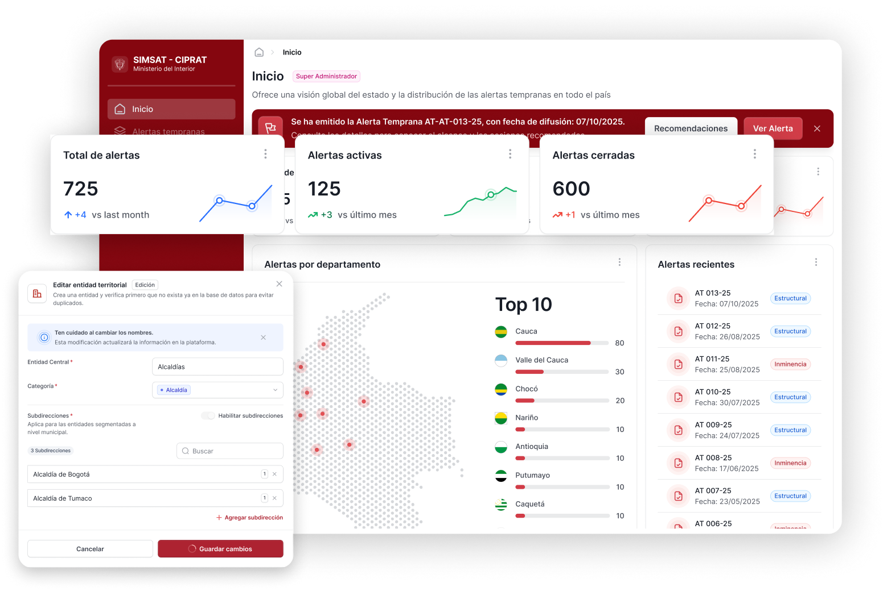

Usuarios y organizaciones
Cuentas, roles, invitaciones y entidades.
Centro de ayuda · SI-CIPRAT
Consulta los contenidos, permisos y procedimientos que necesitas para usar SI-CIPRAT con seguridad y trazabilidad.

Rutas de aprendizaje
Selecciona el rol que te fue asignado para ver sus módulos, objetivos, alcance, restricciones e indicadores de logro.
Contexto de plataforma
SI-CIPRAT es el Sistema de Información de la Comisión Intersectorial para la Respuesta Rápida a las Alertas Tempranas del Ministerio del Interior de Colombia. Centraliza la gestión desde el registro de una alerta hasta la consumación del plan de acción.
El acceso se segmenta por alcance geográfico e institucional: nacional, macrozona, departamento, entidad central o subdirección.
Mapa de contenidos
Tu ruta por rol indica cuáles de estos módulos puedes consultar, gestionar o aprobar.
Cuentas, roles, invitaciones y entidades.
Registro, edición, cierre e historial.
Actividades de respuesta por alerta.
Revisión de actividades e informes.
Carga, consultas e informes de avance.
Dashboard, mapas e indicadores.
Procesamiento inteligente y SISAT/X-Road.
Consumación, alertas y actividad reciente.
Información pública habilitada.